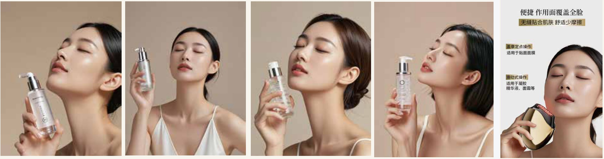
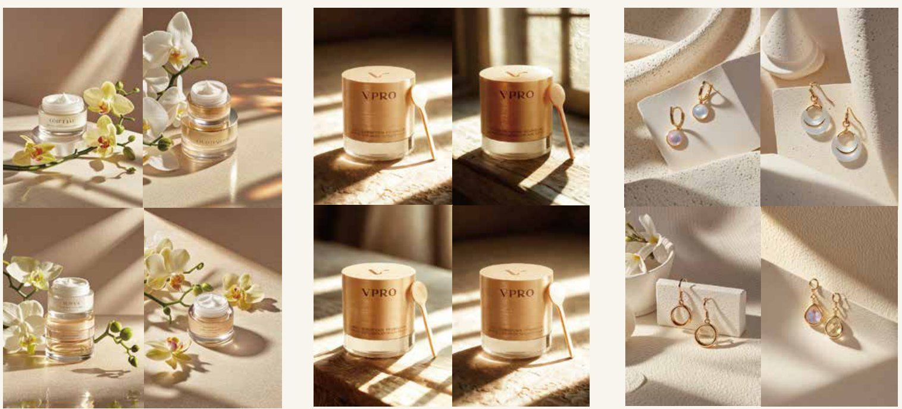

美妆品牌 AI 视觉
高端美妆品牌从 0 到 1 的视觉。美妆对画面要求高，每出一批新图都要专业摄影团队拍模特，再精修，成本高、周期长。引入 AI 后，由 AI 生成局部素材，人负责合成与精修，省下的是每次新品的拍摄费用。下面四个案例都是这一个逻辑。
怎么实现
AI 生成局部素材，人合成精修
Before摄影团队拍模特 → 精修AfterAI 生成局部素材 + 自家模特与产品 → 合成精修
01局部素材 + 自家模特AI + 人
- 模特用素材库里自家模特的角度；缺的部分交给 AI：医美手套的手、眼睛、五官、需要的视角
- 产品用实拍图放上去，瓶身和标签不交给 AI；合成和精修全是人
02产品图直接生成AI
- 宣传推广用的氛围产品图，关键词直接生成，效果已经能用
03成分与功效素材AI
- 成分是兰花，要「贵妇鎏金」的感觉；还有细胞、油水这类画面。AI 生成素材，人再做产品和背景的融合与精修
案例




工具
Midjourney · 即梦 · Photoshop